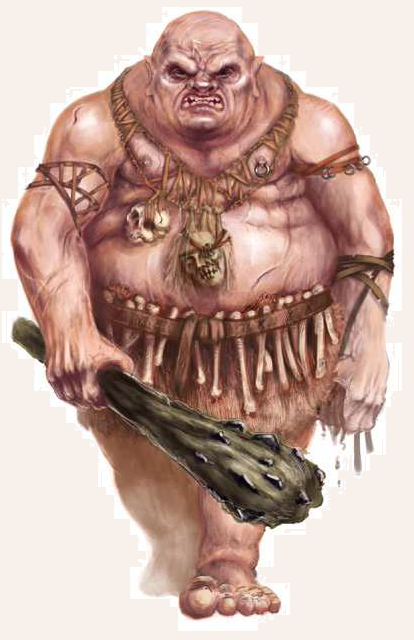

Oger sind die natürlichen Feinde des Menschen, denn sie gieren vor allem nach seinem schmackhaften Fleisch. Der unstillbare Hunger der Menschenfresser ist sprichwörtlich und so mancher Wanderer und Pilzsammler ist schon einer der muskulösen Kreaturen zum Opfer gefallen. Einer Legende nach sollen sich die Oger zu tausenden aus den Überresten des stets hungrigen Giganten Ogeron erhoben haben, dessen Leib in den Gigantenkriegen auf Dere stürzte. Seit diesem Tag sind sie getrieben vom unstillbaren Hunger nach Fleisch. Die Menschenfresser sind mehr als zweieinhalb Schritt groß und neigen zur Fettleibigkeit. Ihre bleiche Haut ist unbehaart und glänzt vor ranzig stinkendem Fett, mit dem sie sich einzureiben plegen. Es ist wohl auch diesem Gestank zu verdanken, dass man ihnen mit etwas Glück aus dem Weg gehen kann, bevor man ihrer ansichtig wird. Gelbe, messerscharfe Zähne säumen ihre Mäuler, mit denen sie ihre Beute oft roh verzehren, obwohl sie das Feuermachen ebenso wie einige rudimentäre Handwerkskünste beherrschen. Unter den kulturschaffenden Spezies nehmen Oger den niedrigsten Rang ein, denn ihr begrenzter Verstand ist allzeit ihrem Fressund Paarungstrieb unterworfen. Sind sie jedoch satt, was selten genug vorkommt, kann man durchaus recht beschränkte Gespräche mit ihnen führen. Trotz der Bezeichnung Menschenfresser schrecken Oger im Übrigen nicht davor zurück, auch Elfen oder sogar Zwerge zu verspeisen. Deutlich geringer schätzen sie hingegen den Geschmack von Goblins oder Orks.
Verbreitung
Oger sind in ganz Aventurien heimisch und hausen meist in Ruinen, verwaisten Bauten oder Höhlen.
Bisweilen errichten sie auch einfache Laubhütten oder graben kurze Stollen in den Boden.
Im Laufe des Jahres wandern viele der Ogerfamilien durchs Land, sodass sie fast immer und überall auftauchen können.
Die menschengroßen und blinden, dafür aber in allen anderen Sinnen geschärften Höhlenoger sind ausschließlich in den nördlichen Gebirgen angesiedelt, während die eng verwandten, sich aber nur planzlich ernährenden Hügellinge in Erdhöhlen am oberen Bodir sowie im Orkland leben.
In den Regenwäldern und auf den Waldinseln sind wiederum die dunkelhäutigen Schwarzoger heimisch, die sich als weitaus geschickter, gescheiter und zuweilen sogar als zivilisiert erweisen.
Sie können sogar ihren beständigen Hunger in Zaum halten, um ihre Pläne voranzutreiben.
In Uthuria gibt es Berichten zufolge eine größere Population von Schwarzogern.
Diese sollen deutlich intelligenter als ihre aventurischen Verwandten sein und sogar eine eigene Stadt erbaut haben.
Lebensweise
Oger leben in kleinen Familienverbänden von drei bis sechs Individuen.
Sie unternehmen oft tagelange Raubzüge, wobei das Weibchen meist zum Schutz der Wohnhöhle zurückbleibt.
Mit Ausnahme einiger überdurchschnittlich intelligenter Vertreter beherrschen Oger nur eine grundlegende, grunzende Sprache, die oft mit Lehnwörtern aus dem Garethi oder dem Oloarkh, der niederen Sprache der Orks, durchmischt ist.
Es gibt jedoch Hinweise auf eine vergessene schamanistische Ogerkultur, die ein einst höheres Zivilisationsniveau nahelegen.
Die wenigen Gelehrten, die sich ernsthaft mit den Menschenfressern beschäftigt haben, behaupten sogar, dass Oger eine eigene Erzählkultur aus Sagen und Legenden ihr Eigen nennen.
Trotz des beständigen Hungers, der viele Oger antreibt, scheint Kannibalismus bei ihnen nur relativ selten vorzukommen.
Mitunter kommt es vor, dass sich Oger mit Orkoder Goblinbanden zu Zweckgemeinschaften zusammenschließen, wobei auch ein Goblin schon mal auf dem Speiseplan landen kann, sollten die gemeinsamen Raubzüge erfolglos bleiben.
Die Orks fangen oftmals Oger, um ihren Willen mit Magie, Götterwirken und Schlägen zu brechen.
Die so unterworfenen Menschenfresser werden gerüstet und trainiert, um als Streitoger zu dienen.
Manche Häuptlinge verleihen diese kampferprobten Leibwächter als Gunstbeweis an Orkkrieger, wenn sie für ihn in den Krieg ziehen.
Zwar gehen Oger meist alleine oder in kleinen Gruppen auf die Jagd, in seltenen Fällen rotten sie sich aber auch zusammen.
Solchen Horden aus nach Fleisch gierenden Ungeheuern sind schon ganze Städte zum Opfer gefallen.
Ihren Einwohnern blühte oft das grausame Schicksal, noch bei lebendigem Leibe gefressen zu werden.
Zuletzt wurden die Söhne Ogerons, wie man die Oger oft auch nennt, vom ehemaligen Hofmagier des Kaiserhauses, dem Reichsverräter Galotta, durch instere Magie unterworfen und zu einem solchen Heerzug zusammengerufen.
So marschierten zahllose Menschenfresser im Jahre 1003 BF und zerstörten unter anderem die damalige Hauptstadt Tobriens, Ysilia, bis sie an der Trollpforte in der Schlacht der 1.000 Oger besiegt wurden.
Ogersche Namen:
weiblich: weiblich: Ahrkh, Arzach, Beinkauerin, Blutgurgler, Fleischhauerin, Gharraa, Lahuff, Orkentot, Shlach, Zhuraar
männlich: männlich: Arzuch, Barthak, Bluttrinker, Elfenesser, Gorpp, Knochenknacker, Krog, Ullgump, Wehkhir, Yahrazz
Oger
Größe: 2,60 bis 2,80 Schritt Körpergröße
Gewicht: 200 bis 250 Stein
Eigenschaften:
MU 16
KL 06
IN 10
CH 08
FF 10
GE 12
KO 20
KK 22
LeP: 60
AsP: -
KaP: -
INI: 13+1W6
SK: -1
ZK: 5
GS: 8
AW: 6
Waffenlos:
AT: 10
PA: 8
TP: 1W6+8
RW: mittel
Oger-Keule:
AT: 9
PA: 7
TP: 2W6+7
RW: lang
Großer Stein:
FK: 10
LZ: 3
TP: 2W6
RW: 4/20/32
RS/BE: 2/0
Aktionen: 1
Vor- und Nachteile: Schlechte Eigenschaft (Aberglaube, Neugier)
Sonderfertigkeiten: Mächtiger Schlag (Oger-Keule, bei erfolgreichem Angriff müssen Gegner der Größe mittel und kleiner eine Probe auf Kraftakt erschwert um 1 bestehen, sofern sie nicht ausgewichen sind; ansonsten erhalten sie den Status Liegend), Schildspalter (Waffenlos, Oger-Keule), Wuchtschlag I (Waffenlos, Oger-Keule)
Talente: Klettern 3 (16/12/22), Körperbeherrschung 4 (12/12/20), Kraftakt 9 (20/22/22), Schwimmen 3 (12/20/22), Selbstbeherrschung 5 (16/16/20), Sinnesschärfe 7 (6/10/10), Verbergen 2 (16/10/12), Einschüchtern 7 (16/10/8), Menschenkenntnis 0 (6/10/8), Überreden 0 (16/10/8), Willenskraft 1 (16/10/8)
Anzahl: 1 oder 2W3 (Ogerfamilie)
Größenkategorie: groß
Typus: Kulturschaffender, humanoid
Kampfverhalten: Oger fressen gerne Menschen und andere Zweibeiner. Sie sind fast immer hungrig und auf der Suche nach Beute. Meist versuchen sie sich an ihr Opfer heranzuschleichen, treiben es in die Enge und versuchen es mit Keulenhieben zu erledigen. Wenn sie mit einem mächtigen Schlag einen Gegner auf den Boden befördert haben, nutzen sie in der Regel Wuchtschläge, um ihr Opfer zu erledigen, auch wenn dies ihre Trefferwahrscheinlichkeit senkt.
Flucht: Oger fliehen nicht. Sie sind zu dumm dafür. Schlaue Exemplare liehen beim Verlust von 75% ihrer LeP.
Erfahren: KO 21 statt 20, KK 23 statt 22; LeP 65 statt 60, Waffenlos AT 11 / PA 10 / TP 1W6+9, Oger-Keule AT 10 / PA 7 / TP 2W6+8; Körperbeherrschung 6 statt 4, Kraftakt 12 statt 9, Selbstbeherrschung 7 statt 5, Sinnesschärfe 9 statt 7, Verbergen 4 statt 2, Einschüchtern 9 statt 7, Willenskraft 2 statt 1
Kompetent: KO 22 statt 20, KK 24 statt 22; LeP 70 statt 60, Waffenlos AT 13 / PA 11 / TP 1W6+10, Oger-Keule AT 12 / PA 8 / TP 2W6+9; Körperbeherrschung 8 statt 4, Kraftakt 14 statt 9, Selbstbeherrschung 9 statt 5, Sinnesschärfe 11 statt 7, Verbergen 6 statt 2, Einschüchtern 11 statt 7, Willenskraft 3 statt 1
Sonderregeln: Fressgier: Sollte der Oger Hunger haben, so muss er beim Anblick eines fressbaren Zweibeiners (etwa einem Menschen) eine Probe auf Willenskraft erschwert um 5 bestehen, um nicht sofort seinen Fressgelüsten nachzugehen.
| LeP-Verlust | Schmerz | |
|---|---|---|
| 45 LeP (¾) | +1 Schmerz | |
| 30 LeP (½) | +1 Schmerz | |
| 15 LeP (¼) | +1 Schmerz | |
| 5 LeP und weniger | +1 Schmerz |